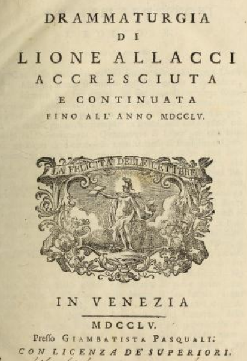

Benvenuti!
Questo sito presenta il progetto di digitalizzazione e modellazione di un ampio catalogo di testi drammatici in lingua italiana, la Drammaturgia di Leone Allacci (1666). L'edizione di riferimento è quella riveduta ed accresciuta da Giovanni Cendoni, Apostolo Zeno e altri (Venezia, Pasquali, 1755).
Suggerimento di citazione
Base di dati: Giovannini, Luca, e Giorgia Gallucci (2024). "Database: Allacci Digitale". Zenodo. DOI: 10.5281/zenodo.10972669.
Pubblicazione: Giovannini, Luca, e Giorgia Gallucci (2024). "Digitalizzazione e modellazione della Drammaturgia di Leone Allacci". In: AIUCD 2024 Book of Abstracts. Catania: Università di Catania. DOI: 10.6092/unibo/amsacta/7927.
